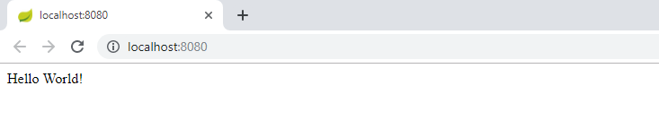

Historiquement, mettre en place une application java / jee est long et fastidieux.
Le but de spring boot est de simplifier tout cela.
Il devient même possible de faire tenir son application dans un tweet
source https://twitter.com/rob_winch/status/364871658483351552?lang=fr@RestController
class ThisWillActuallyRun {
@RequestMapping("/")
String home() {
"Hello World!"
}
}➤ Mettez ce code dans un fichier hello.groovy puis lancez
$ spring run hello.groovy
WARNING: An illegal reflective access operation has occurred
WARNING: Illegal reflective access by org.codehaus.groovy.vmplugin.v7.Java7$1 (jar:file:/C:/Users/jaad/.sdkman/candidates/springboot/current/lib/spring-boot-cli-2.1.5.RELEASE.jar!/BOOT-INF/lib/groovy-2.5.7.jar!/) to constructor java.lang.invoke.MethodHandles$Lookup(java.lang.Class,int)
WARNING: Please consider reporting this to the maintainers of org.codehaus.groovy.vmplugin.v7.Java7$1
WARNING: Use --illegal-access=warn to enable warnings of further illegal reflective access operations
WARNING: All illegal access operations will be denied in a future release
. ____ _ __ _ _
/\\ / ___'_ __ _ _(_)_ __ __ _ \ \ \ \
( ( )\___ | '_ | '_| | '_ \/ _` | \ \ \ \
\\/ ___)| |_)| | | | | || (_| | ) ) ) )
' |____| .__|_| |_|_| |_\__, | / / / /
=========|_|==============|___/=/_/_/_/
:: Spring Boot :: (v2.1.5.RELEASE)
2019-06-13 09:03:38.503 INFO 2896 --- [ runner-0] o.s.boot.SpringApplication : Starting application on JAAD3 with PID 2896 (started by jaad in C:\Users\jaad\projects)
2019-06-13 09:03:38.523 INFO 2896 --- [ runner-0] o.s.boot.SpringApplication : No active profile set, falling back to default profiles: default
2019-06-13 09:03:39.745 INFO 2896 --- [ runner-0] o.s.b.w.embedded.tomcat.TomcatWebServer : Tomcat initialized with port(s): 8080 (http)
2019-06-13 09:03:39.777 INFO 2896 --- [ runner-0] o.apache.catalina.core.StandardService : Starting service [Tomcat]
2019-06-13 09:03:39.777 INFO 2896 --- [ runner-0] org.apache.catalina.core.StandardEngine : Starting Servlet engine: [Apache Tomcat/9.0.19]
2019-06-13 09:03:39.842 INFO 2896 --- [ runner-0] org.apache.catalina.loader.WebappLoader : Unknown class loader [org.springframework.boot.cli.compiler.ExtendedGroovyClassLoader$DefaultScopeParentClassLoader@7a36aefa] of class [class org.springframework.boot.cli.compiler.ExtendedGroovyClassLoader$DefaultScopeParentClassLoader]
2019-06-13 09:03:39.888 INFO 2896 --- [ runner-0] o.a.c.c.C.[Tomcat].[localhost].[/] : Initializing Spring embedded WebApplicationContext
2019-06-13 09:03:39.888 INFO 2896 --- [ runner-0] o.s.web.context.ContextLoader : Root WebApplicationContext: initialization completed in 1179 ms
2019-06-13 09:03:40.123 INFO 2896 --- [ runner-0] o.s.s.concurrent.ThreadPoolTaskExecutor : Initializing ExecutorService 'applicationTaskExecutor'
2019-06-13 09:03:40.523 INFO 2896 --- [ runner-0] o.s.b.w.embedded.tomcat.TomcatWebServer : Tomcat started on port(s): 8080 (http) with context path ''
2019-06-13 09:03:40.527 INFO 2896 --- [ runner-0] o.s.boot.SpringApplication : Started application in 2.524 seconds (JVM running for 4.498)
L'application est maintenant accessible sur http://localhost:8080
Un paramètre dans une url est placé après le ?, par exemple http://localhost:8080?name=Thierry
Dans le code, on peut récupérer la bonne valeur
@RestController
class ThisWillActuallyRun {
@RequestMapping("/")
String home(@RequestParam String name) {
"Hello $name!"
}
}➤ Relancez spring run hello.groovy afin de tester le fonctionnement du paramètre name
Le chemin de l'url est comprise entre le nom de domaine et les paramètres
Par exemple pour http://example.org/mon/chemin/index.html?name=Jean le chemin est /mon/chemin/index.html
➤ Dans le code, il est possible de répondre sur un chemin particulier
@RestController
class ThisWillActuallyRun {
@RequestMapping("/hello/world")
String home() {
"Hello World!"
}
}➤ ou bien de venir lire une partie du chemin
@RestController
class ThisWillActuallyRun {
@RequestMapping("/hello/{name}")
String home(@PathVariable String name) {
"Hello $name!"
}
}L'url n'est qu'une partie de la requête http
Spring permet de venir lire tout ce que contient la requête et de générer la réponse
Nous allons regarder un peu plus en détails comment fonctionne ce protocole
home